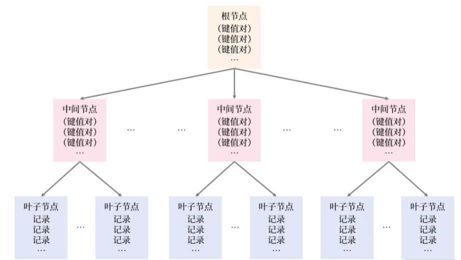
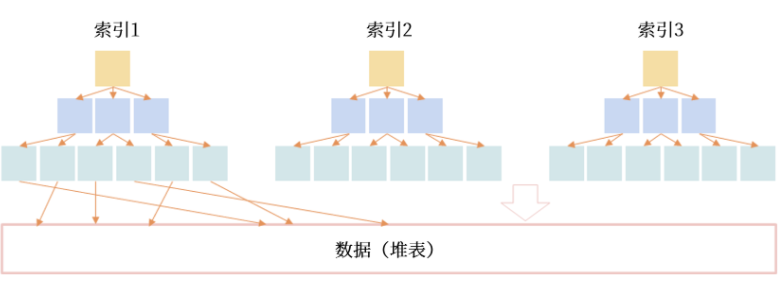
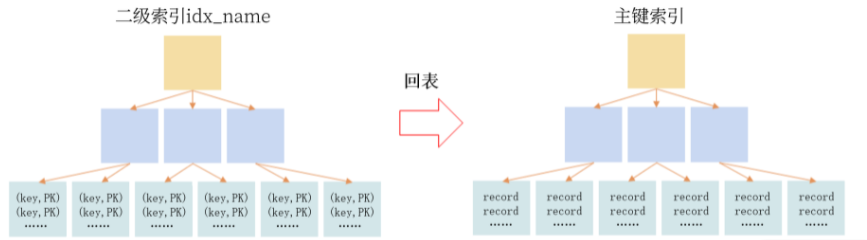
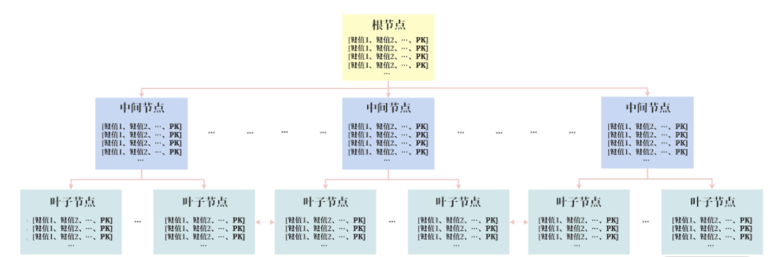
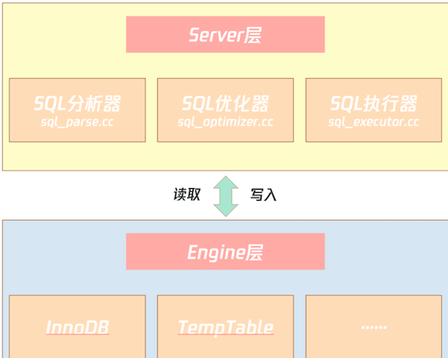
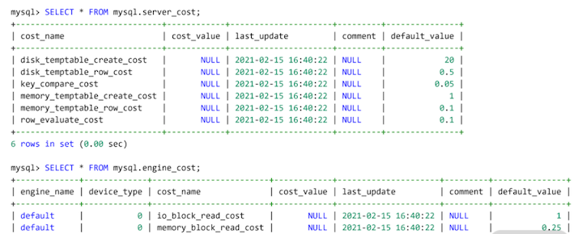

L3 索引优化
1 索引：排序的艺术
1-1 索引是什么？
索引是提升查询速度的一种数据结构。
MySQL 8.0 版本中，InnoDB 存储引擎支持的索引有 B+ 树索引、全文索引、R 树索引。
1-2 B+树索引结构
那为什么关系型数据库都热衷支持 B+树索引呢？因为它是目前为止排序最有效率的数据结构。像二叉树，哈希索引、红黑树、SkipList，在海量数据基于磁盘存储效率方面远不如 B+ 树索引高效。
B+树索引的特点是： 基于磁盘的平衡树，但树非常矮，通常为 3~4 层，能存放千万到上亿的排序数据。树矮意味着访问效率高，从千万或上亿数据里查询一条数据，只用 3、4 次 I/O。
B+ 树索引由根节点（root node）、中间节点（non leaf node）、叶子节点（leaf node）组成，其中叶子节点存放所有排序后的数据。当然也存在一种比较特殊的情况，比如高度为 1 的B+ 树索引：
CREATE TABLE User (
id BIGINT AUTO_INCREMENT PRIMARY KEY,
name VARCHAR(128) NOT NULL,
sex CHAR(6) NOT NULL,
registerDate DATETIME NOT NULL,
...
)
所有 B+ 树都是从高度为 1 的树开始，然后根据数据的插入，慢慢增加树的高度。你要牢记：索引是对记录进行排序， 高度为 1 的 B+ 树索引中，存放的记录都已经排序好了，若要在一个叶子节点内再进行查询，只进行二叉查找，就能快速定位数据。
可随着插入 B+ 树索引的记录变多，1个页（16K）无法存放这么多数据，所以会发生 B+ 树的分裂，B+ 树的高度变为 2，当 B+ 树的高度大于等于 2 时，根节点和中间节点存放的是索引键对，由（索引键、指针）组成。
高度为 3 的 B+ 树索引本质上与高度 2 的索引一致，如下图所示

用户可以通过命令 EXPLAIN 查看是否使用索引：
mysql> EXPLAIN SELECT * FROM User WHERE id = 1\G
********************** 1. row **********************
id: 1
select_type: SIMPLE
table: User
partitions: NULL
type: const
possible_keys: PRIMARY
key: PRIMARY
key_len: 8
ref: const
rows: 1
filtered: 100.00
Extra: NULL
在输出的 EXPLIAN 结果中，可以看到列 key 显示 PRIMARY，这表示根据主键索引进行查询。若没有根据索引进行查询，如根据性别进行查询，则会显示类似如下内容：
mysql> EXPLAIN SELECT * FROM User WHERE sex = 'male'\G
********************** 1. row **********************
id: 1
select_type: SIMPLE
table: User
partitions: NULL
type: ALL
possible_keys: NULL
key: NULL
key_len: NULL
ref: NULL
rows: 986400
filtered: 50.00
Extra: Using where
1-3 优化 B+ 树索引的插入性能
B+ 树在插入时就对要对数据进行排序，但排序的开销其实并没有你想象得那么大，因为排序是 CPU 操作（当前一个时钟周期 CPU 能处理上亿指令）。
MySQL 中 B+ 树索引的设计与管理
在 MySQL 数据库中，可以通过查询表 mysql.innodb_index_stats 查看每个索引的大致情况：
SELECT
table_name,index_name,stat_name,
stat_value,stat_description
FROM innodb_index_stats
WHERE table_name = 'orders' and index_name = 'PRIMARY';
+----------+------------+-----------+------------+------------------+
|table_name| index_name | stat_name | stat_value |stat_description |
+----------+-------------------+------------+------------+----------+
| orders | PRIMARY|n_diff_pfx01|5778522 | O_ORDERKEY |
| orders | PRIMARY|n_leaf_pages|48867 | Number of leaf pages |
| orders | PRIMARY|size |49024 | Number of pages in the index|
+--------+--------+------------+------+-----------------------------+
3 rows in set (0.00 sec)
从上面的结果中可以看到，表 orders 中的主键索引，大约有 5778522 条记录，其中叶子节点一共有 48867 个页，索引所有页的数量为 49024。根据上面的介绍，你可以推理出非叶节点的数量为 49024 ~ 48867，等于 157 个页。
那你怎么知道哪些 B+树索引未被使用过呢？在 MySQL 数据库中，可以通过查询表sys.schema_unused_indexes，查看有哪些索引一直未被使用过，可以被废弃：
SELECT * FROM schema_unused_indexes
WHERE object_schema != 'performance_schema';
+---------------+-------------+--------------+
| object_schema | object_name | index_name |
+---------------+-------------+--------------+
| sbtest | sbtest1 | k_1 |
| sbtest | sbtest2 | k_2 |
| sbtest | sbtest3 | k_3 |
| sbtest | sbtest4 | k_4 |
| tpch | customer | CUSTOMER_FK1 |
| tpch | lineitem | LINEITEM_FK2 |
| tpch | nation | NATION_FK1 |
| tpch | orders | ORDERS_FK1 |
| tpch | partsupp | PARTSUPP_FK1 |
| tpch | supplier | SUPPLIER_FK1 |
+---------------+-------------+--------------+
如果数据库运行时间比较长，而且索引的创建时间也比较久，索引还出现在上述结果中，DBA 就可以考虑删除这些没有用的索引。
而 MySQL 8.0 版本推出了索引不可见（Invisible）功能。在删除废弃索引前，用户可以将索引设置为对优化器不可见，然后观察业务是否有影响。若无，DBA 可以更安心地删除这些索引：
ALTER TABLE t1
ALTER INDEX idx_name INVISIBLE/VISIBLE;
- 索引是加快查询的一种数据结构，其原理是插入时对数据排序，缺点是会影响插入的性能；
- MySQL 当前支持 B+树索引、全文索引、R 树索引；
- B+ 树索引的高度通常为 3~4 层，高度为 4 的 B+ 树能存放 50 亿左右的数据；
- 由于 B+ 树的高度不高，查询效率极高，50 亿的数据也只需要插叙 4 次 I/O；
- MySQL 单表的索引没有个数限制，业务查询有具体需要，创建即可，不要迷信个数限制；
- 可以通过表
sys.schema_unused_indexes和索引不可见特性，删除无用的索引。
2 索引组织表
InnoDB 存储引擎是 MySQL 数据库中使用最为广泛的引擎，在海量大并发的 OLTP 业务中，InnoDB 必选。
它在数据存储方面有一个非常大的特点：索引组织表（Index Organized Table）。
2-1 索引组织表
数据存储有堆表和索引组织表两种方式。
堆表中的数据无序存放， 数据的排序完全依赖于索引（Oracle、Microsoft SQL Server、PostgreSQL 早期默认支持的数据存储都是堆表结构）。

从图中看到，堆表的组织结构中，数据和索引分开存储
索引是排序后的数据，而堆表中的数据是无序的，索引的叶子节点存放了数据在堆表中的地址，当堆表的数据发生改变，且位置发生了变更，所有索引中的地址都要更新，这非常影响性能，特别是对于 OLTP 业务。
- 而索引组织表，数据根据主键排序存放在索引中，主键索引也叫聚集索引（Clustered Index）。
- 在索引组织表中，数据即索引，索引即数据。
MySQL InnoDB 存储引擎就是这样的数据组织方式；
但是，PostgreSQL 数据库因为只支持堆表存储，不适合 OLTP 的访问特性，虽然它后期对堆表有一定的优化，但本质是通过空间换时间，对海量并发的 OLTP 业务支持依然存在局限性。
2-2 二级索引
InnoDB 存储引擎的数据是根据主键索引排序存储的，除了主键索引外，其他的索引都称之为二级索引（Secondeary Index）， 或非聚集索引（None Clustered Index）。
二级索引也是一颗 B+ 树索引，但它和主键索引不同的是叶子节点存放的是索引键值、主键值。
创建的表 User，假设在列 name 上还创建了索引 idx_name，该索引就是二级索引：
CREATE TABLE User (
id BIGINT AUTO_INCREMENT,
name VARCHAR(128) NOT NULL,
sex CHAR(6) NOT NULL,
registerDate DATETIME NOT NULL,
...
PRIMARY KEY(id), -- 主键索引
KEY idx_name(name) -- 二级索引
)
如果用户通过列 name 进行查询，比如下面的 SQL：
SELECT * FROM User WHERE name = 'David'，
通过二级索引 idx_name 只能定位主键值，需要额外再通过主键索引进行查询，才能得到最终的结果。
这种“二级索引通过主键索引进行再一次查询”的操作叫作“回表”，你可以通过下图理解二级索引的查询：

索引组织表这样的二级索引设计有一个非常大的好处：若记录发生了修改，则其他索引无须进行维护，除非记录的主键发生了修改。
“索引组织表，数据即索引，索引即数据”。那么为了便于理解二级索引，你可以将二级索引按照一张表来进行理解，比如索引 idx_name 可以理解成一张表
CREATE TABLE idx_name (
name VARCHAR(128) NOT NULL,
id BIGINT NOT NULL,
PRIAMRY KEY(name,id)
)
根据 name 进行查询的 SQL 可以理解为拆分成了两个步骤：
SELECT id FROM idx_name WHERE name = ?
SELECT * FROM User WHERE id = _id; -- 回表
当然，对于索引，还可以加入唯一的约束，具有唯一约束的索引称之为唯一索引，也是二级索引。
对于表 User，列 name 应该具有唯一约束，因为通常用户注册通常要求昵称唯一，所以表User 定义更新为：
PRIMARY KEY(id), -- 主键索引
UNIQUE KEY idx_name(name) -- 二级索引
那么对于唯一索引又该如何理解为表呢？ 其实我们可以将约束理解成一张表或一个索引，故唯一索引 idx_name 应该理解为：
CREATE TABLE idx_name (
name VARCHAR(128) NOT NULL,
id BIGINT NOT NULL,
PRIAMRY KEY(name,id)
) -- 二级索引
CREATE TABLE check_idx_name (
name VARCHAR(128),
PRIMARY KEY(name)，
) -- 唯一约束
在索引组织表中，万物皆索引，索引就是数据，数据就是索引。
堆表中的索引都是二级索引，哪怕是主键索引也是二级索引，也就是说它没有聚集索引，每次索引查询都要回表。
同时，堆表中的记录全部存放在数据文件中，并且无序存放，这对互联网海量并发的 OLTP 业务来说，堆表的实现的确“过时”了。
2-3 函数索引
从 MySQL 5.7 版本开始，MySQL 就开始支持创建函数索引 （即索引键是一个函数表达式）。 函数索引有两大用处：
- 优化业务 SQL 性能；
- 配合虚拟列（Generated Column）。
你应该了解到MySQL InnoDB 存储引擎是索引组织表，以及索引组织表和堆表之间的区别。
- 索引组织表主键是聚集索引，索引的叶子节点存放表中一整行完整记录；
- 除主键索引外的索引都是二级索引，索引的叶子节点存放的是（索引键值，主键值）；
- 由于二级索引不存放完整记录，因此需要通过主键值再进行一次回表才能定位到完整数据；
- 索引组织表对比堆表，在海量并发的OLTP业务中能有更好的性能表现；
- 每种不同数据，对二级索引的性能开销影响是不一样的；
- 有时通过函数索引可以快速解决线上SQL的性能问题；
- 虚拟列不占用实际存储空间，在虚拟列上创建索引本质就是函数索引。
3 组合索引
3-1 组合索引
组合索引（Compound Index）是指由多个列所组合而成的 B+树索引，这和我们之前介绍的B+ 树索引的原理完全一样，只是之前是对一个列排序，现在是对多个列排序。
组合索引既可以是主键索引，也可以是二级索引，下图显示的是一个二级组合索引：

组合索引的 B+ 树结构
3-2 归纳组合索引的三大优势
- 覆盖多个查询条件，如（a，b）索引可以覆盖查询
a = ?或者a = ?andb = ?； - 避免 SQL 的额外排序，提升 SQL 性能，如
WHERE a = ? ORDER BY b这样的查询条件； - 利用组合索引包含多个列的特性，可以实现索引覆盖技术，提升 SQL 的查询性能，用好索引覆盖技术，性能提升 10 倍不是难事。
4 索引出错
MySQL 并没有按照自己的预想来选择索引，比如创建了索引但是选择了全表扫描，这肯定是 MySQL 数据库的 Bug，或者是索引出错了。
当然不是！ 这主要因为索引中的数据犯了错。
表 orders 中，对于字段 o_custkey 已经创建了相关的 3 个索引，所以现在表 orders 的情况如下所示：
...
CREATE TABLE `orders` (
...
PRIMARY KEY (`O_ORDERKEY`),
KEY `idx_custkey_orderdate` (`O_CUSTKEY`,`O_ORDERDATE`),
KEY `ORDERS_FK1` (`O_CUSTKEY`),
KEY `idx_custkey_orderdate_totalprice` (`O_CUSTKEY`,`O_ORDERDATE`,`O_TOTALPRICE`),
CONSTRAINT `orders_ibfk_1` FOREIGN KEY (`O_CUSTKEY`) REFERENCES `customer` (`C_CUSTKEY`)
) ENGINE=InnoDB
在查询字段 o_custkey 时，理论上可以使用三个相关的索引：ORDERS_FK1、idx_custkey_orderdate、idx_custkey_orderdate_totalprice。那 MySQL 优化器是怎么从这三个索引中进行选择的呢？
在关系型数据库中，B+ 树索引只是存储的一种数据结构，具体怎么使用，还要依赖数据库的优化器，优化器决定了具体某一索引的选择，也就是常说的执行计划。
而优化器的选择是基于成本（cost），哪个索引的成本越低，优先使用哪个索引。

MySQL 执行过程
如上图所示，MySQL 数据库由 Server 层和 Engine 层组成：
- Server 层有 SQL 分析器、SQL优化器、SQL 执行器，用于负责 SQL 语句的具体执行过程；
- Engine 层负责存储具体的数据，如最常使用的 InnoDB 存储引擎，还有用于在内存中存储临时结果集的 TempTable 引擎
SQL 优化器会分析所有可能的执行计划，选择成本最低的执行，这种优化器称之为：CBO（Cost-based Optimizer，基于成本的优化器）。
而在 MySQL中，一条 SQL 的计算成本计算如下所示：
Cost = Server Cost + Engine Cost
= CPU Cost + IO Cost
其中，CPU Cost 表示计算的开销，比如索引键值的比较、记录值的比较、结果集的排序……这些操作都在 Server 层完成；
IO Cost 表示引擎层 IO 的开销，MySQL 8.0 可以通过区分一张表的数据是否在内存中，分别计算读取内存 IO 开销以及读取磁盘 IO 的开销。
数据库 mysql 下的表 server_cost、engine_cost 则记录了对于各种成本的计算，如：

表 server_cost 记录了 Server 层优化器各种操作的成本，这里面包括了所有 CPU Cost，其具体含义如下。
disk_temptable_create_cost：创建磁盘临时表的成本，默认为20。disk_temptable_row_cost：磁盘临时表中每条记录的成本，默认为0.5。key_compare_cost：索引键值比较的成本，默认为0.05，成本最小。memory_temptable_create_cost：创建内存临时表的成本：默认为1。memory_temptable_row_cost：内存临时表中每条记录的成本，默认为0.1。row_evaluate_cost：记录间的比较成本，默认为0.1。
可以看到， MySQL 优化器认为如果一条 SQL 需要创建基于磁盘的临时表，则这时的成本是最大的，其成本是基于内存临时表的 20 倍。
而表 engine_cost 记录了存储引擎层各种操作的成本，这里包含了所有的 IO Cost，具体含义如下。
而表 engine_cost 记录了存储引擎层各种操作的成本，这里包含了所有的 IO Cost，具体含义如下。
io_block_read_cost：从磁盘读取一个页的成本，默认值为1。memory_block_read_cost：从内存读取一个页的成本，默认值为0.25。
也就是说， MySQL 优化器认为从磁盘读取的开销是内存开销的 4 倍。
MySQL索引出错案例分析
案例1：未能使用创建的索引
经常听到有同学反馈 MySQL 优化器不准，不稳定，一直在变。
但是，我想告诉你的是，MySQL 优化器永远是根据成本，选择出最优的执行计划。哪怕是同一条 SQL 语句，只要范围不同，优化器的选择也可能不同。
EXPLAIN SELECT * FROM orders
WHERE o_orderdate > '1994-01-01'
AND o_orderdate < '1994-12-31'\G
EXPLAIN FORMAT=tree
SELECT * FROM orders
WHERE o_orderdate > '1994-01-01'
AND o_orderdate < '1994-12-31'\G
*************************** 1. row ***************************
EXPLAIN: -> Filter: ((orders.O_ORDERDATE > DATE'1994-01-01') and (orders.O_ORDERDATE < DATE'1994-12-31')) (cost=592267.11 rows=1876082)
-> Table scan on orders (cost=592267.11 rows=5799601)
EXPLAIN FORMAT=tree
SELECT * FROM orders FORCE INDEX(idx_orderdate)
WHERE o_orderdate > '1994-01-01'
AND o_orderdate < '1994-12-31'\G
*************************** 1. row ***************************
EXPLAIN: -> Index range scan on orders using idx_orderdate, with index condition: ((orders.O_ORDERDATE > DATE'1994-01-01') and (orders.O_ORDERDATE < DATE'1994-12-31')) (cost=844351.87 rows=1876082)
总结
我们知道了 MySQL 优化器是 CBO，即一种基于成本的优化器。
- MySQL 优化器是 CBO 的；
- MySQL 会选择成本最低的执行计划，你可以通过 EXPLAIN 命令查看每个 SQL 的成本；
- 一般只对高选择度的字段和字段组合创建索引，低选择度的字段如性别，不创建索引；
- 低选择性，但是数据存在倾斜，通过索引找出少部分数据，可以考虑创建索引；
- 若数据存在倾斜，可以创建直方图，让优化器知道索引中数据的分布，进一步校准执行计划